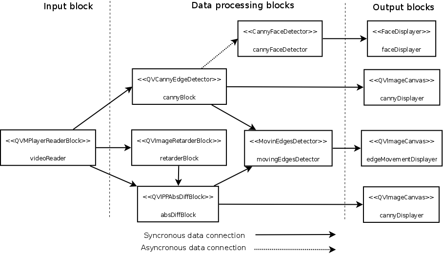

PARP Research Group
PARP Research Group
| PARP Research Group |
Universidad de Murcia |
Block synchronizationSo far we have only worked with synchronous data linking between processing blocks. These links were established using the method QVProcessingBlock::linkProperty() from the QVPropertyContainer class. Up to now, the last parameter of these calls has been always the same value: QVProcessingBlock::SynchronousLink. That made the data link to be synchronous. Using the value QVProcessingBlock::AsynchronousLink in that parameter would make the corresponding link asynchronous. For example, suppose we wanted to add a face detector based on Canny edges to the application developed in the previous section. We can assume that the processing of that detector -i.e., the sequence of instructions executed in its iterate method- would be slow. Therefore, should we connect the corresponding block to the main processing chain of the application using a synchronous link, it would dramatically slow down the frame rate of the original moving edge detector. The solution is to link the new block to the overall block diagram of the application using an asynchronous link. For example, if we had developed a processing block class CannyFaceDetector which obtains the edges from a Canny edge detector and performs a (maybe slow) face detection procedure with them, the following code illustrates how we could add it to our application: int main(int argc, char *argv[]) { [...] CannyFaceDetector cannyFaceDetector("Canny edges based face detector"); cannyBlock.linkProperty("Output contours", &cannyFaceDetector, "Input contours", QVProcessingBlock::AsynchronousLink); // Add any output block connected to the 'cannyFaceDetector', storing or displaying // its results. return app.exec(); } The final application block diagram for this last example would be the following:

Further reading about block programming: The Worker design patternThe block-oriented programming implemented in the QVision is based on a parallel programming design pattern, named the Worker design pattern. The following paper can be read for further insight and a more technical detail of this design pattern, related to our implementation of block programming: Antonio L. Rodríguez, Pedro E. López-de-Teruel, Alberto Ruiz, Ginés García-Mateos, L. Fernóndez: A Design Pattern for Component Oriented Development of Agent Based Multithreaded Applications. Proceedings of the Euro-Par 2008 conference, LNCS vol 5168, pp. 709-718. |